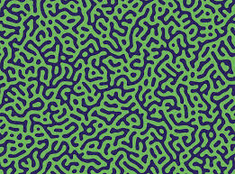

Abstract
Turing patterns are spontaneous patterns that form from reaction-diffusion equations. They underlie the patterns in leopard spots, zebra stripes, and coral reef structure, and your fingerprints. Murmurations are the same idea made kinetic, and emerge from individuals following local rules, with no one in charge of the whole.
I aim to use laser cutting to transfer computationally generated Turing and murmuration patterns onto paper and fabric for screen/shade fabrication. The static patterns become dynamic through their interplay with light throughout the day, creating emergent shadows.

